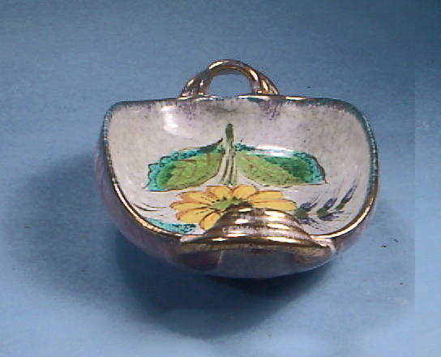
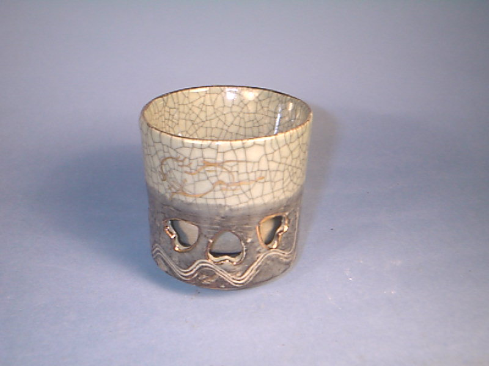
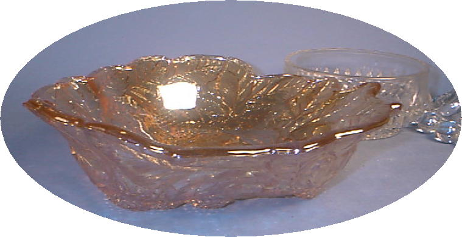
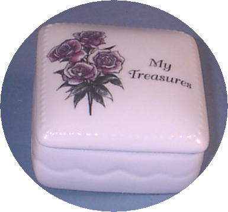
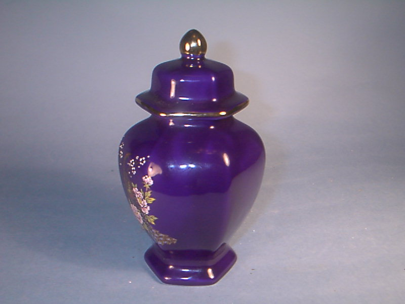
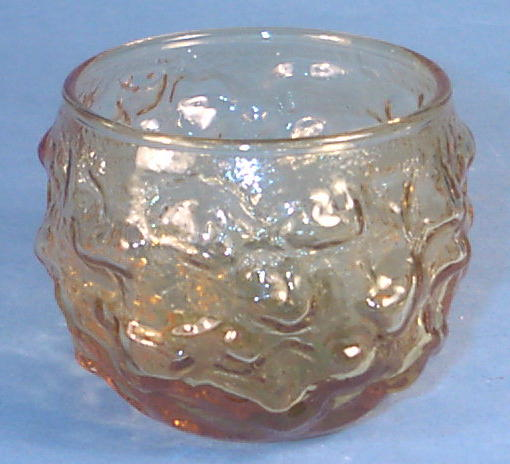
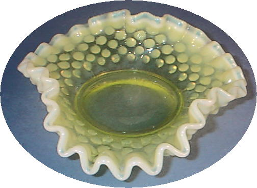

Things in the lower level of the main china cabinet
Check here to see what is on the upper shelf of the main cabinet.Look here for things in the cabinet at the corner of the davenport
Look here for things on the middle level of the main cabinet
shopping
 Silver plated candle holder
Silver plated candle holder Little blue bud vase. Ceramic about 4 inches tall.
Little blue bud vase. Ceramic about 4 inches tall. Very old Thumbnail candy bowl.
Very old Thumbnail candy bowl.  Good for a glass vase.
Good for a glass vase.  Japanese Rice Bowl
Japanese Rice Bowl Ceramic bowl. Rim is beat up. nuy nice.
Ceramic bowl. Rim is beat up. nuy nice. Pearlite walrus. 3 1/2 inches long
Pearlite walrus. 3 1/2 inches long
Nice little hand painted ceramic dish. Grace Kelly and King. Small souvenir dish Very nice.
Grace Kelly and King. Small souvenir dish Very nice. 5 Inches
5 Inches  Crown shaped frosted vase.
Crown shaped frosted vase.  Crystal glass candle holder
Crystal glass candle holder Indian Brass bowl on stand.
Indian Brass bowl on stand.  Soda Crystal Glass bud vase
Soda Crystal Glass bud vase{kind=link}

A different ceramic vase Inside the vase it has been decorated with flower
Inside the vase it has been decorated with flower Old Ceramic Chinese soup spoon
Old Ceramic Chinese soup spoon Nicel little soda glass bowl.
Nicel little soda glass bowl.{kind=link}

Antique depression Glass bowl. Hand Painted Egg
Hand Painted Egg Silver Plate Carafe
Silver Plate Carafe Ceramic stand for vase
Ceramic stand for vase Embroidered Wall or under glass decoration.
Embroidered Wall or under glass decoration. Beautiful Ceramic Vase
Beautiful Ceramic Vase 6 French black mugs
6 French black mugs.
{kind=link}

Ceramic Bedside Jewelry holder Frosted gold rimmed bowl.
Frosted gold rimmed bowl.{kind=link}

Chinese Tea vase ceramic Second view of tea container
Second view of tea container Old beautiful Japanese bud vase.
Old beautiful Japanese bud vase. Sterling silver candle holder.
Sterling silver candle holder.{kind=link}

Small jar or vase Decorated egg
Decorated egg Very nice 7 inch bowl.
Very nice 7 inch bowl.  Nice bedside jewelry container
Nice bedside jewelry container Hand carved African Lion.
Hand carved African Lion. Hand Carved Stand
Hand Carved Stand Plate shaped velvet ornament
Plate shaped velvet ornament Wooden vase stand
Wooden vase stand Bud vase
Bud vase Gold decorated ladies Hand Bag. From WW2 collection
Gold decorated ladies Hand Bag. From WW2 collection Leaf shaped with gold pattern on t he bottom
Leaf shaped with gold pattern on t he bottom Plate and matching cup. Very old. Probably from the 1920's
Plate and matching cup. Very old. Probably from the 1920's The cup and matching tray above.
The cup and matching tray above. Cup matches previous plate
Cup matches previous plate{kind=link}

Depression hobnailed candy dish..
 Stratford pen and pencil set.
Stratford pen and pencil set.  Ice bucket from Brown family collection
Ice bucket from Brown family collection Nice little bud vase
Nice little bud vase.